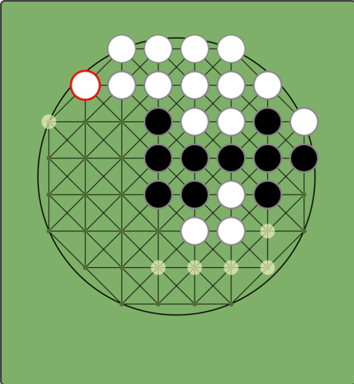
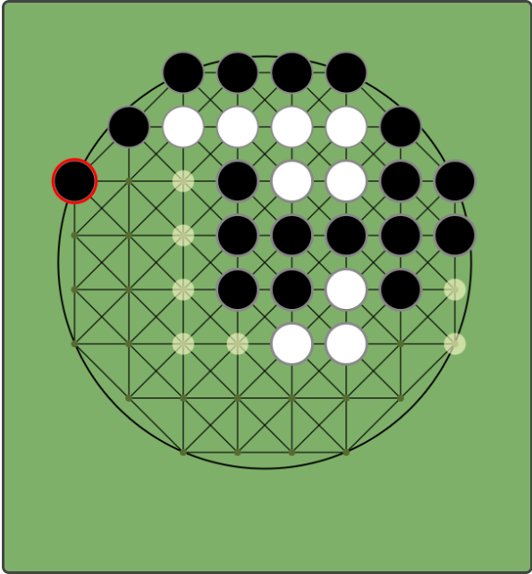
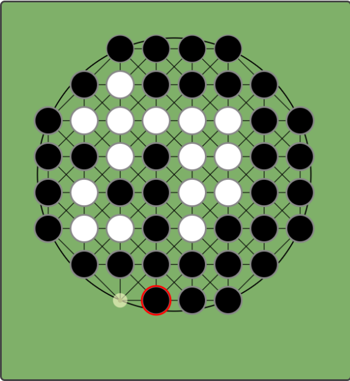
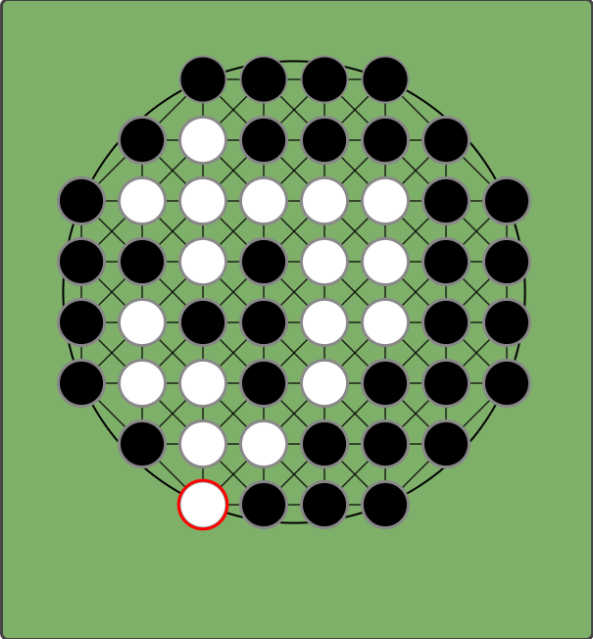
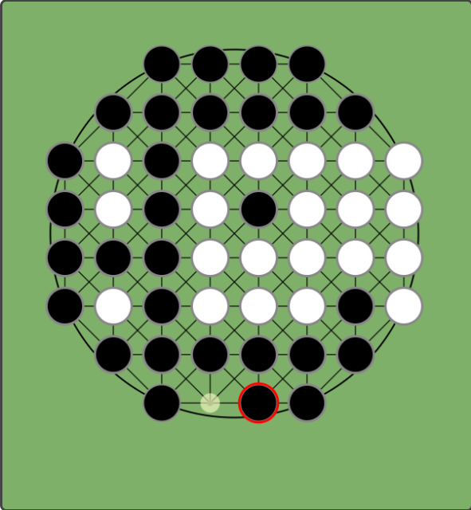
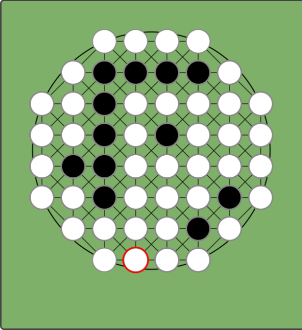

1. ゲームの概要
NIPは、8×8のボードから四隅などを除いた全52マスで行う、新しい形のリバーシです。最大の特徴は、盤面の最も外側が円のように繋がっている「円周（サーキュラー）構造」にあります。
2. 基本的な遊び方
- 対局の流れ： 中央に黒石・白石それぞれ２マスずつ計4マス石が置かれた初期配置からスタートします。黒（先手）と白（後手）が交互に石を置いていきます。自分の石で相手の石を挟むと、自分の色に塗り替えることができます。ただし自分の手番では、「相手の石を1枚以上挟める場所」にしか石を置くことができません。
- 挟める方向： 普通のオセロは縦・横・斜めの合計8方向が挟める方向ですが、NIPではこれに加えて「円周方向」も挟むことができます。1つの石を置くことで、同時に複数の方向で相手を挟んだ場合、それらすべての石が裏返ります。ただし、「裏返った石によってさらに別の石が裏返る」という連鎖反応は起きません。あくまで、新しく置いた1手によって直接挟まれた石のみが変化します。
- パス： 自分の手番で石を置ける場所がない場合は、自動的にパスとなります。
- 勝利条件： 盤面がすべて埋まるか、両者ともに打てる場所がなくなった時点で対局終了です。最終的に盤面の石の数が多いプレイヤーの勝利となります。
3. 特殊ルール：円周の連続性
一番外側の「円周」にある20マスは、時計回り・反時計回りに行き止まりなく繋がっています。円周の内側であるインナーエリアでの戦いは通常のリバーシに近い感覚ですが、円周エリアに石が及んだ瞬間、ゲームの性質が激変します。
● 円周で挟む
外周に石を置いた際、その円周に沿って時計回り、または反時計回りに相手の石を挟んでいる場合、それらをすべて裏返すことができます。これにより、一見挟まれていないような場所からでも、円を一周するようにして大量逆転が可能です。

【挟む前】

【挟んだ後】一気に裏返る
● ケース1：挟めていない場合（逆転不可）
円周上の空きマスが残り1つのとき、その空きマス以外のすべてが「黒」だったとします。そこに「白」を置いたとしても、その白石は円周上のどこにも「別の白石」と対になって相手を挟んでいないため、黒石をひっくり返すことはできません。

【置く前】周囲はすべて黒

【置いた後】挟めないので変化なし
● ケース2：混ざっている場合（逆転可能）
円周上の空きマスが残り1つのとき、その空きマス以外に「白」と「黒」が混ざっている状態で「白」を置いたとします。この場合、新しく置いた白石から左右それぞれを見て、次に現れる白石があるところまでの間にある黒石をすべて挟んでひっくり返すことができます。

【置く前】白と黒が混ざっている

【置いた後】次の白石までを裏返す
4. 攻略のヒント
普通のオセロ（リバーシ）では、四隅の「角」を取ることが最も重要です。しかし、円形の盤面を持つNIPでは、決まった角が存在しません。
その代わりに重要となるのが「円周全体の支配」です。特定の数マスだけでなく、円周のつながり全体を意識して自分の石を配置し、どこからでも逆転を狙える（あるいは防げる）状態を維持することが勝利への鍵となります。